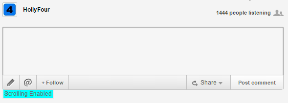
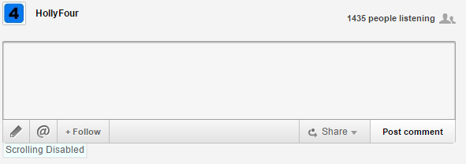

For those who hate the automatic scrolling of new comments I created a way to control it. Now me, I think its useful most of the time but sometimes it drives me nuts. Plus I have noticed on other pages at times there is a user who will post a reply to a comment and delete it over and over and over thinking he is preserving freedom by keeping you from posting.
What this does is add a button under the edit window that you can click to turn on and off scrolling. This works by intercepting calls to the browser scrollTo and scrollBy functions and ignoring them if scrolling is not enabled. It is enabled by default.
So you will see this meaning scrolling is enabled:

And press it again and you will see this meaning scrolling is disabled

To run it you need to run the javascript code below in your browser. It's easiest in chrome if you look at how to open the developer tools and go to the snippets tab (under the Sources tab). Then you can save this code as a snippet and it will be stored across sessions. Then you can run the snipet in future sessions.
For Firefox you will want to look into the JavaScript Scratchpad.
For either browser you can also just paste the entire code into the console command line of the browser.
For IE you are on your own as I don't use it. (It should work for modern versions of IE but you will need to research how to get the code into the browser).
Nothing is persistent outside using the snippets to simply save the code to be run manually later. So worst case if it does not work close your browser and it's like it never happened.
---- code follows (Tip: press "view raw" for a page with only the code on it) ----